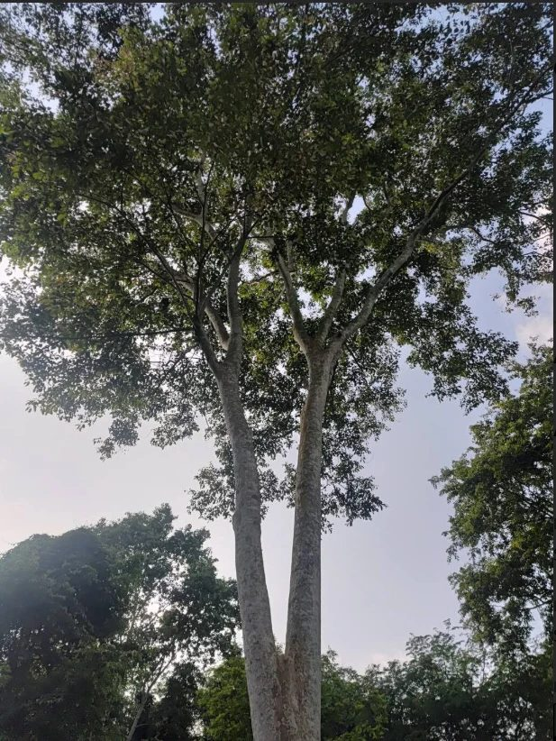
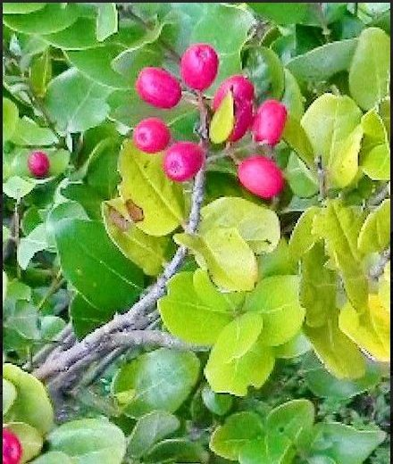
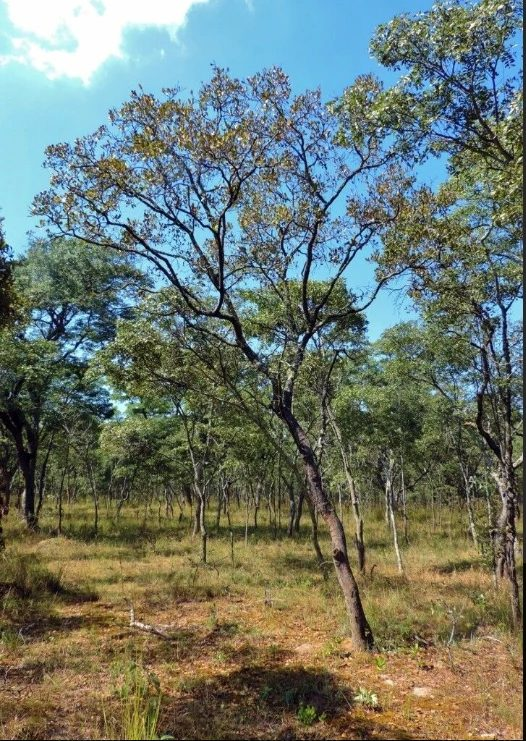
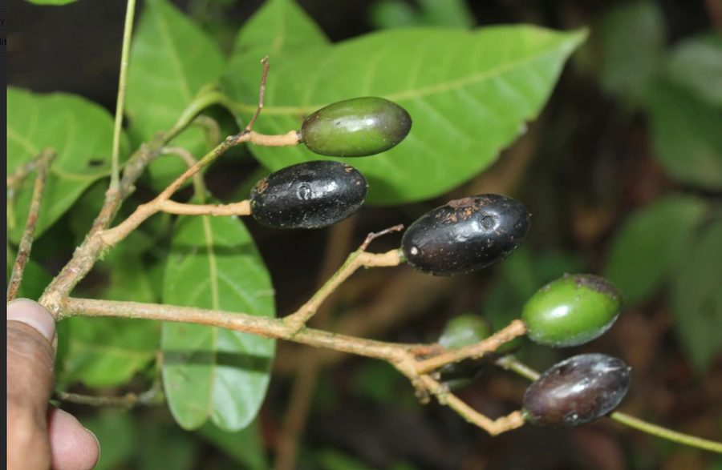
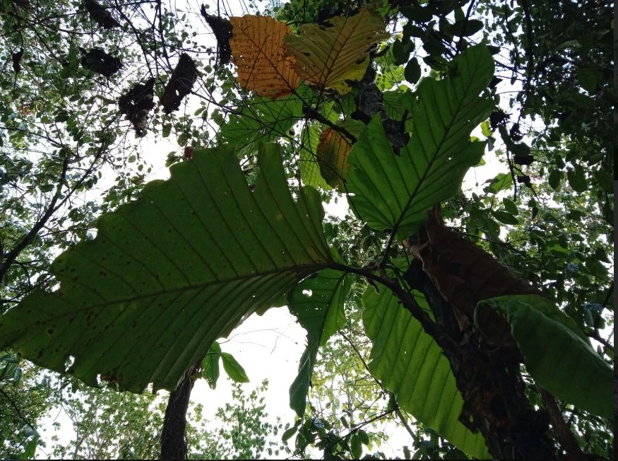

Dipterocarpus alatus
Contributor: Aisyah Rahman
"Spotted this giant near a riverbank. The trunk had old resin cuts at the base."
Verified
Citizen science for Malaysia's plant biodiversity
These cards show plant photos uploaded by registered users of Pl@netMatrix. Each card lists the contributor, the plant, their photo and their comments. Our taxonomists check every upload before it is marked as verified.
The contributions below are sample entries that show how the gallery will look.

Contributor: Aisyah Rahman
"Spotted this giant near a riverbank. The trunk had old resin cuts at the base."
Verified

Contributor: Daniel Wong
"The fruits were such a bright pink that they were impossible to miss."
Verified

Contributor: Priya Nair
"Open woodland with trees spaced far apart. The leaves were starting to change colour."
Pending review

Contributor: Jason Lim
"Found ripe black fruits and green ones on the same branch."
Verified

Contributor: Nur Hidayah
"This single leaf was wider than my arm span!"
Pending review

Contributor: Tousif Akhand
"A nursery seedling grown for replanting. Great to see this endangered tree being protected."
Verified
| Contributor | Photos shared | Species recorded |
|---|---|---|
| Aisyah Rahman | 18 | 3 |
| Jason Lim | 12 | 2 |
| Nur Hidayah | 9 | 2 |
Want to see your name here? Contribute your plant photos.